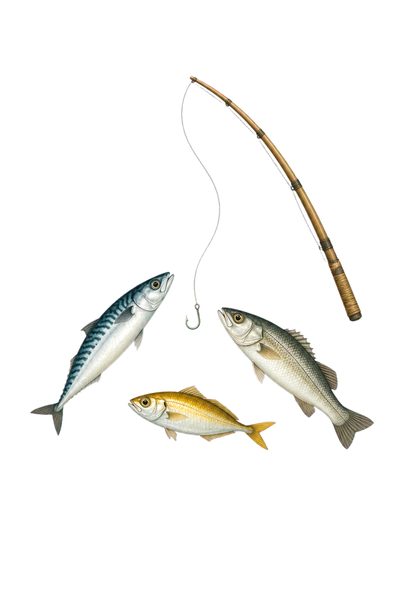
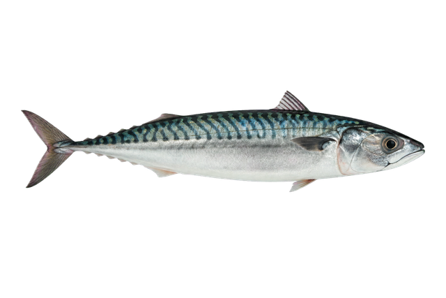
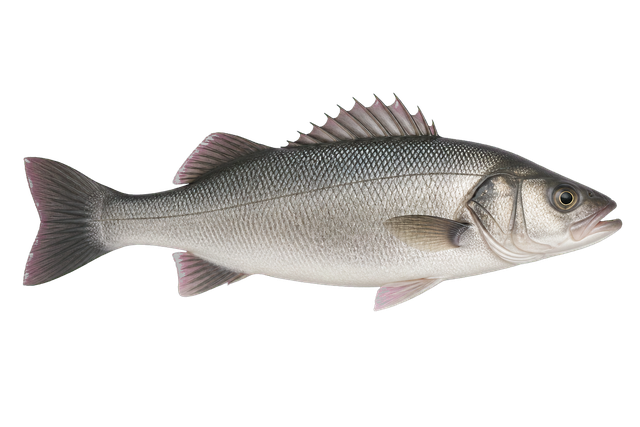

보유 전0전

초보 낚시꾼0전


물결이 잔잔해요
낚싯대를 던져 보세요!이번 배에서0번 낚시
FISH COLLECTION
물고기 도감
✦
한 번이라도 잡은 물고기는
팔아도 도감에 남아요.
BOAT SHOP
배 구매
⚓
더 먼 바다로 갈 준비가 되었나요?
새 배를 구매하면 새로운 어종을 만날 수 있어요.BOAT COLLECTION
배 도감
FISHING LOG
보관함
총 낚시 횟수0회
총 판매 금액0전
잡은 물고기는 바로 판매되어 전으로 바뀝니다.